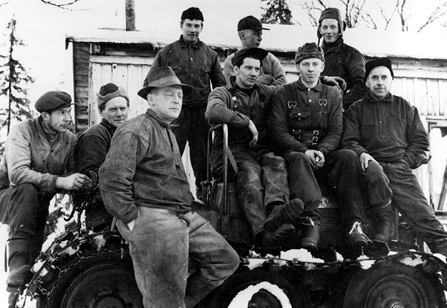
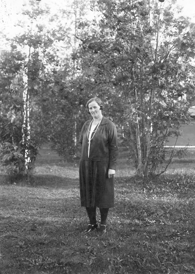
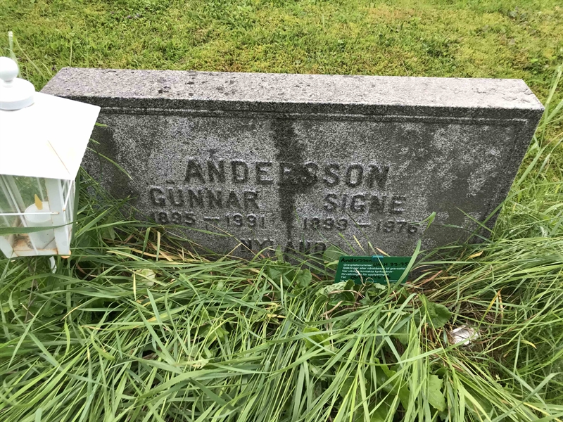

Gunnar
Andersson
Från kyrkböckerna i Södermanland till ett möjligt spår i Järpen. Ett liv att följa, en lucka i taget.
Här börjar spåret.
Gunnar Valfrid föds i Björkvik. Församlingsböckerna anger den 20 mars 1895. Hans mor heter Amalia Andersson. Födelseboken antecknar honom som född utanför äktenskapet, utan namngiven far. Datumet i den ursprungliga födelsenoteringen behöver fortfarande kontrolleras.
Ett hushåll i Kjulsta.
Gunnar Valfrid står tillsammans med Amalia och Anders Johan Andersson Silfverlåås. Familjen kommer från Tuna. Anders Johan är Gunnars möjliga pappa.
Gunnar blir Gustaf i texten.
Familjen följs från Kjulsta via Grindstugan vid Goglunda till Skåra. I de senare uppslagen står Gustaf Valfrid, född 20 mars 1895 i Björkvik, tillsammans med Amalia. Namnformen skiljer sig från Gunnar Valfrid i den tidigare boken. Enligt berättelser i familjen kan en präst ha hört fel på Gunnar och Gustaf och skrivit in fel namn. Det är en möjlig förklaring; orsaken är inte belagd i kyrkböckerna. Flytten till Hyltinge 1909 har nu följts till den mottagande församlingen.
Spåret fortsätter till Hyltinge.
Gustaf Valfrid finns med Amalia, Anders Johan och de yngre pojkarna Johan Erik Filip och Sven Georg Valdemar i Långdunker, på sidan 82. Familjen förs vidare till Dalstugan, sidan 89, samma år. Gustaf anges som född 20 mars 1895 i Björkvik och som inte döpt.
Familjen finns kvar i böckerna.
Amalia, Anders Johan Silfverlåås och de yngre pojkarna flyttar från Hyltinge till Björkvik 1910 och återfinns i Brostugan under Mörtbol. Här står Johan Erik Filip, född 18 mars 1905, och Sven Georg Valdemar, född 22 april 1909. Den 19 november 1913 föds Knut Valentin. Gustaf Valfrid följer inte med på detta uppslag: hans egen kyrkobokföring fortsätter i Hyltinge, på sidan 374.
Kvar i församlingens bok.
År 1910 förs Gustaf Valfrid Andersson från Dalstugan till sidan 374, under rubriken ”Å församlingen skrivne”. Uppslaget ger ingen bestämd bostadsadress. En anteckning uppger att modern bor vid Mörtbol i Björkvik. Därmed går hans eget spår att följa även efter familjens flytt.
En flyttattest mot Gefle.
Hyltingeboken anger utflyttning till ”Gefle” den 1 maj 1914. I utflyttningslängden, post 21, står Andersson Gustaf Valfrid, arbetare, född 20 mars 1895, från sidan 374. Hans inflyttningspost och adress i Gävle har ännu inte identifierats. Noteringen visar det angivna flyttmålet; den bekräftar inte i sig var han sedan bodde.
En ny väg till sjöss.
Den 6 maj 1914 skrivs Gustaf Valfrid Andersson in i Nyköpings sjömanshus med nummer 457. Han har fyllt 19 år. Inskrivningen sker fem dagar efter den noterade utflyttningen från Hyltinge mot Gävle.
Registret anger född 20 mars 1895 i Björkvik och hänvisar till Hyltinges församlingsbok, sidan 374. Namn, födelsedatum, födelseförsamling och bokhänvisning knyter inskrivningen till personen vi har följt. Nummer 457 är nu bekräftat i själva sjömansregistret.
”Boken utfärd.: Gefle” står antecknat: sjömansboken utfärdades i Gävle. Mor Amalia anges med adress Brostugan, Bettna. Även en far Andersson finns antecknad, men förnamnet är ännu inte säkert tytt.
En jungman. En anteckning.
I ett meddelande från Stockholms sjömanshus till Nyköping återkommer Andersson med nummer 457 och födelseåret 1895. Befattningen anges som jungman. Därmed finns nu en konkret fartygspost att följa vidare.
Fartygsnamnet läses preliminärt som Stjernen, med Köpenhamn som hemort. Namnläsningen och det exakta datumet på hans rad behöver fortfarande kontrolleras säkrare.
På raden står ”Rymd” med rött. Det är handlingens anteckning om att han lämnat tjänsten; den berättar inte varför eller vart han därefter tog vägen.
Två personer? · tolkningen av Hansa-spåret
Dessa uppgifter stärker teorin att Gunnar/Gustaf Valfrid Andersson, född 20 mars 1895 i Björkvik, och Gustaf Erik Andersson, född 22 mars 1903 i Vrena och omkommen på S/S Hansa, inte är samma person. Förnamn, födelsedatum och födelseförsamling skiljer sig åt. Sjömanshandlingarna följer mannen född 1895 och visar ingen koppling till Hansa.
Avförd ur sjömansregistret.
I sjömanshusets namnregister står Gustaf Valfrid Andersson, nummer 457, född 20 mars 1895. Raden anger inskrivning den 6 maj 1914 och avföring den 31 december 1919.
Det daterar när han avfördes ur registret. Det är inte en dödsnotis och fastställer varken hans sista arbetsdag till sjöss eller att han avslutade militärtjänst. Var han befann sig då framgår inte.
Anteckningen ”Rymd” i meddelandet från 1915 kan höra samman med att han lämnade fartygstjänsten, men orsaken till avföringen 1919 är ännu inte säkert klarlagd. Spåret återkommer i Ödeshög vid vigseln 1924; vistelseorten under mellantiden är fortfarande okänd.
Ett giftermål i Ödeshög.
Gustaf Valfrid Andersson gifter sig med Helga Matilda Josefina Olsson, född Fyhr, den 16 augusti 1924. Vigselboken anger hans födelsedatum som 20 mars 1895. Det är hans första äktenskap och hennes andra.
Helga är född den 30 september 1885. Vigselnotisen hänvisar till församlingsbokens sida 479. I folkräkningen 1930 återfinns hon på Ödeshögs Skattegård, Björklunda, med Gustaf Valfrid angiven som make.
Adressen försvinner ur spåret.
År 1929 förs Gustaf Valfrid över till boken över obefintliga. Han står där som agent, född 20 mars 1895 i Björkvik, med hänvisning från församlingsbokens sida 537.
Agent kunde vid den här tiden betyda förmedlare eller ombud, exempelvis handelsagent eller försäkringsagent. Vilken sorts agent Gustaf var framgår inte av anteckningen.
I folkräkningen 1930 står han kvar bland de obefintliga, med vistelseorten angiven som obekant. Det betyder att hans vistelseort inte var känd i kyrkobokföringen. Uppgiften säger inte varför han lämnade hemmet eller vart han reste.
Helga finns samtidigt kvar i Björklunda. Hon anges som agenthustru och med arbete som hjälp i hemmen.
Tillbaka i församlingens bok.
Gustaf Valfrid Andersson förs under 1932 från obefintlighetsbokens sida 1 till församlingsbokens sida 699. Namnet, yrket agent och födelsedatumet 20 mars 1895 i Björkvik stämmer med de tidigare uppgifterna i Ödeshög.
Sidans rubrik är ”På församlingen skrifna, utan bestämt hemvist”. Han återkommer alltså i den vanliga kyrkobokföringen, men någon bestämd bostadsadress anges inte. Överföringen visar inte i sig att han fysiskt återvände till Ödeshög.
Anna och sonen Anders Gunnar.
Anna Maria Ödmark, född den 26 juni 1899 i Arnäs, flyttar från Östersund till Nordmaling 1928. Inflyttningsdatumet läses som den 7 december. Hon anges som piga och förs 1929 vidare till en annan sida under Nordmalings municipalsamhälle.
Den 6 oktober 1932 föder Anna sonen Anders Gunnar — min farfar. I födelseboken, post 150, läses fadersraden som ”(erkänd) Gunnar Valfrid Andersson”. Det är ett dokumenterat erkännande i kyrkoboken och ett starkt stöd för kopplingen till Gunnar/Gustaf Valfrid i vår berättelse. Faderns födelsedatum saknas på raden och orten efter namnet behöver tydas säkrare. Något separat undertecknat intyg har ännu inte återfunnits.
Anna avlider den 18 oktober 1932, 33 år gammal och tolv dagar efter Anders födelse. Dödsdatumet anges i församlingsboken; dödsorsaken är ännu inte kontrollerad. Anna och Anders finns tillsammans på sidan 1048.
Gustaf Valfrids äktenskap med Helga varade från 1924 till skilsmässan 1942. Kopplingen till Anna ligger alltså under detta äktenskap, om fadersnotisens Gunnar Valfrid är samma man. Hur och var Anna och Gunnar träffades är fortfarande svårt att belägga. Hans okända vistelseort i Ödeshögs böcker under delar av perioden visar inte i sig att han befann sig i Nordmaling.
Ett kort spår i Björklunda.
I församlingsboken för 1937–1946 står han fortfarande som Gustaf Valfrid Andersson. Under 1941 följs han från sidan 699, för personer utan bestämt hemvist, till sidan 552 vid Björklunda och sedan tillbaka till sidan 699.
Födelsedatumet 20 mars 1895 och födelseorten Björkvik följer med mellan uppslagen. Yrkesuppgiften på den senare raden läses preliminärt som murarbetare. Någon återgång till namnet Gunnar har ännu inte hittats här.
Äktenskapet upplöses.
Gustaf Valfrid och Helga Matilda Josefina, född Fyhr, skiljs den 16 februari 1942 enligt församlingsboken. På hans rad står ”Frånsk.” och datumet ”42 16/2” i civilståndskolumnen.
Han är därmed frånskild när flytten till Undersåker registreras drygt två månader senare.
Flyttspåret når Järpen.
Ödeshögs utflyttningsbok anger Gustaf Valfrid Andersson, född 20 mars 1895, utflyttad den 21 april 1942. Post 31 hänvisar tillbaka till församlingsbokens sida 699. Flyttmålet är Undersåker, med Nyland och Järpen i adressfältet.
Inflyttningen har nu återfunnits i Undersåkers inflyttningsbok, post 98. Den leder vidare till hushållet i Nyland på sidan 197. Även här står han som Gustaf Valfrid Andersson, född 20 mars 1895 i Björkvik. Inflyttningsboken anger yrket murarbetare. Senare befolkningsregister följer honom vidare i Undersåker till 1990. Fotografiets identitet är ännu inte säkerställd.
Ett nytt äktenskap.
Gustaf Valfrid står tillsammans med hustrun Signe Hildegard Andersson, född Wissing. Hon är född den 4 februari 1899 i Gällivare. De senare befolkningsregistren anger vigseldatumet 19 december 1942. Signe finns i samma hushåll som Gustaf i registren för 1950, 1960, 1970 och 1975.
Noteringen om hans tidigare skilsmässa från Helga Matilda Josefina, född Fyhr, finns också på uppslaget. Inga barn är upptagna under paret här. Det visar inte i sig att han saknade barn.
En annan Gustaf på Hansa.
På morgonen den 24 november 1944 sänks passagerarfartyget S/S Hansa på väg från Nynäshamn till Visby. Av 86 personer ombord överlever endast två; 84 omkommer. Senare uppgifter ur ryska arkiv visar att fartyget sänktes av ubåten L-21.
I det fotograferade bokutdraget om Hansas omkomna finns Gustav Erik Andersson, 41 år, född den 22 mars 1903 i Vrena. Han beskrivs som ogift och hemmansägare, med värnpliktsnummer 455-43-23. Han hade varit hemma på permission från 14. depåkompaniet vid KA 3 i Fårösund. Enligt anhöriga hade han lämnat hemmet i Husby-Oppunda, där han bodde med sin mor, för att resa från Nynäshamn den 23 november.
Två olika nummer förekommer i handlingarna: Gustaf Erik Andersson har värnpliktsnummer 455-43-23, som börjar med 455. Gunnar/Gustaf Valfrid Andersson har inskrivningsnummer 457 vid Nyköpings sjömanshus. Numren hör till olika register — värnplikten respektive sjömanshuset — och skillnaden mellan dem bevisar därför inte ensam att det är två olika personer.
Slutsats: uppgifterna talar starkt för två olika personer. Gunnar/Gustaf Valfrid Andersson är född den 20 mars 1895 i Björkvik och har ett eget dokumenterat livsspår, med äktenskapet med Signe 1942 och registerposter långt efter katastrofen. Han stämmer alltså inte med den Gustaf Erik som boken räknar till Hansas omkomna.
Likheterna är främst namnet Andersson, namnformen Gustaf/Gustav och en bakgrund i närliggande delar av Södermanland. Födelsedatum, ålder, civilstånd och de dokumenterade livsförloppen skiljer sig åt. Inget i det granskade materialet knyter ihop dem som samma person. Vår slutsats är därför att Gustaf Erik omkom med Hansa, medan Gunnar/Gustaf Valfrid levde vidare.
Katastrofen · Vrak – Museum of Wrecks ↗Vidare till sidan 747.
Gustaf Valfrid och Signe förs båda vidare med hänvisningen ”N.B. 747” — sidan 747 i den nya församlingsboken. Hänvisningen är daterad 1950. Den visar en överföring i kyrkobokföringen och behöver inte innebära att de bytte bostad.
På det lästa uppslaget står han fortfarande som Gustaf Valfrid. Fortsättningen bör finnas i Undersåker A II a/12, som omfattar 1950–1969 och sidorna 701–1050. Volymen är inte tillgänglig som digital bild i Riksarkivets söktjänst och sidan 747 har ännu inte lästs.
Reseombud i Nyland.
Gustaf Valfrid Andersson återfinns i Sveriges befolkning 1950, med födelsedatumet 20 mars 1895 i Björkvik. Han är reseombud och bor på Slagsån 79 i Järpen, fastigheten Nyland 1:30. Samma fastighet anges även för hans mantalsskrivning 1946.
Signe Hildegard Andersson, född 4 februari 1899, finns i samma hushåll. Vigseldatumet anges som 19 december 1942. Inga barn visas i hushållet; det bevisar inte att han saknade barn. Arbetsgivare och bransch framgår inte.
Registret bygger på mantalslängden 1951. Parets uppgifter har även kontrollerats på originalsidan, fält 36.
Spåret i Järpen.
År 1956 dyker namnet Gunnar Andersson, Järpen, upp i Jamtlis uppgifter till ett fotografi av ett avverkningslag vid Gevsjön. Fotografiet ger en inblick i skogsarbetet i Jämtland vid den här tiden.

Samma adress tio år senare.
I Sveriges befolkning 1960 står han fortfarande som Gustaf Valfrid Andersson, född 20 mars 1895 i Björkvik. Yrket är reseombud och bostaden Nyland 1:30, Slagsån 79. Signe finns i samma hushåll och vigseldatumet är fortfarande 19 december 1942.
Före detta reseombud.
Registret för 1970 anger postadressen Box 7, 830 11 Hålland. Han är mantalsskriven i Undersåker och yrket förkortas ”Reseomb fd”, före detta reseombud. Signe står fortfarande i samma hushåll.
Postadressen visar inte den exakta byggnaden eller när adressen ändrades.
En adress i Järpen.
År 1975 återfinns paret på adressen ”Rönnv 3”, Rönnvägen 3 i Järpen. Gustaf är fortfarande antecknad som före detta reseombud och gift med Signe. Födelsedatum och födelseort är oförändrade.
Gustaf blir änkling.
Registren för 1980, 1985 och 1990 anger Gustaf som änkling sedan 10 maj 1976. Datumet stämmer med dödsdagen för Signe i gravregistret. Signe och Gunnar Andersson har samma gravnummer på Undersåkers nedre kyrkogård.

Kvar på Rönnvägen.
I både 1980 och 1985 års register står Gustaf Valfrid Andersson på Rönnvägen 3 i Järpen, fastigheten Notvallen 1:65. Han anges som änkling sedan 1976.
Teori: kvar till 1991. Adressen återkommer också i registret för 1990. Utifrån registerträffarna 1980, 1985 och 1990 är vår teori att Rönnvägen 3 stod kvar som hans registrerade adress fram till slutet av livet. Enligt familjens berättelse bodde han senare på ett äldreboende, medan adressen i registren fortsatt var Rönnvägen 3. Vilket boende det var och när han flyttade dit är ännu inte klarlagt.
Registeradressen är belagd till 1990. Uppgiften om äldreboendet kommer från familjens berättelse och har ännu inte kunnat följas i boendets handlingar.
Signe kallas Gunnars hustru.
En porträttbeskrivning hos Jamtli anger Signe Andersson i Nyland som gift med Gunnar Andersson. Uppgiften lämnades 1988 av Gun Mårtensson. Årtalet gäller uppgiften till museet, inte fotografiets datering eller ett dokumenterat namnbyte.
Även en annan museipost, med Signe Wissing och hennes mor Hilda, anger att Signe var född 1899 och gift med Gunnar Andersson. Där anges Nyland 1:5 och en annan uppgiftslämnare, Edna Röising.
Signe, platsen och namnuppgifterna stärker kopplingen mellan Gustaf Valfrid i kyrkoboken och Gunnar i Nyland. De fastställer ännu inte när eller hur namnformen ändrades.
Fortfarande Gustaf i registret.
Sveriges befolkning 1990 anger fortfarande Gustaf Valfrid Andersson, född 20 mars 1895 i Björkvik, på Rönnvägen 3 i Järpen. Han är änkling och fastigheten anges som Notvallen 1:65.
Namnformen Gustaf Valfrid finns alltså kvar i de granskade registren från 1950 till 1990. Någon formell ändring tillbaka till Gunnar har ännu inte återfunnits. Registerträffarna visar hans folkbokföring vid dessa tidpunkter, inte varje vistelse mellan åren.
Gunnar på gravstenen.
Rönnvägen 3 finns kvar som adress i 1990 års register. Enligt familjens berättelse tillbringade han en senare del av livet på ett äldreboende. Boendets namn och tiden för vistelsen är ännu inte klarlagda.
Gravregistret anger Gunnar Andersson, Järpen, född 20 mars 1895 och död 23 januari 1991. Han gravsattes den 1 februari på Undersåkers nedre kyrkogård, grav UN H 73, 74, 75. Signe, född 4 februari 1899 och död 10 maj 1976, har samma gravnummer. Hennes födelsedatum och dödsdag stämmer med hustrun och änklingsdatumet i Gustaf Valfrids registerposter. Det ger starkt stöd för kopplingen mellan Gustaf Valfrid och gravens Gunnar. När och varför han använde namnet Gunnar är ännu inte dokumenterat.

Slutet av Gunnar/Gustaf Valfrid Anderssons liv.
Den 23 januari 1991 tar livet slut för mannen som vi har följt från Björkvik till Järpen. Han blev 95 år. På graven står Gunnar Andersson — namnet som också lever kvar i familjens berättelser.
I de granskade kyrkböckerna, sjömanshandlingarna och senare befolkningsregistren fortsätter han att heta Gustaf Valfrid, ända fram till 1990. Någon dokumenterad ändring tillbaka till Gunnar har vi inte hittat. Familjens berättelser och museets uppgifter talar för att han ändå använde Gunnar i det dagliga livet.
Min slutsats är att han till stor del levde ett vanligt liv, med arbete, bostäder och äktenskap, men också perioder av uppbrott. Från anteckningen ”Rymd” i sjömanshandlingen till återkommande flyttar och ett nytt giftermål framträder en människa som flera gånger började om. Kanske hade han svårt att stanna på samma plats. Det är min tolkning av livsberättelsen; handlingarna berättar inte vad som drev honom.
Gunnars början i livet får mig att tänka på Jon Snow i Game of Thrones: ett barn fött utanför äktenskapet, med koppling till den adliga familjen Silfverlåås. I dåtidens språk kallades sådana barn ”oäkta”, och i berättelsens värld används ordet ”bastard”. Jämförelsen handlar om ursprung och tillhörighet.
Efter utflyttningen vid 18–19 års ålder har vi inte hittat några dokumenterade återbesök hos familjen i det granskade materialet. Kyrkböckerna registrerar främst boende och flyttar, så frånvaron av anteckningar säger inte om han reste hem på besök eller höll kontakt på andra sätt. Kanske trivdes han inte hemma och valde därför att hålla avstånd. Det är en möjlig förklaring, men vi vet inte hur han själv upplevde sin uppväxt.
Han fick också en son, Anders Gunnar Ödmark — min farfar.
Berättelsen om att han omkom med S/S Hansa 1944 går inte ihop med det liv som de senare registren visar för Gustaf Valfrid, född 1895. Uppgifterna talar starkt för att han och Hansas Gustaf Erik Andersson, född 1903, var två olika personer. Däremot återstår frågorna om det holländska pass som släkten berättar att man hittat och om de försäkringspengar som bröderna ska ha fått. Passets ursprung, utbetalningarna och deras samband med honom har ännu inte verifierats.
Vi har nu följt stora delar av hans liv. Kvar finns frågor om relationerna, valen och berättelserna som levt vidare — sådant som årtal och namn i en bok inte alltid kan förklara.